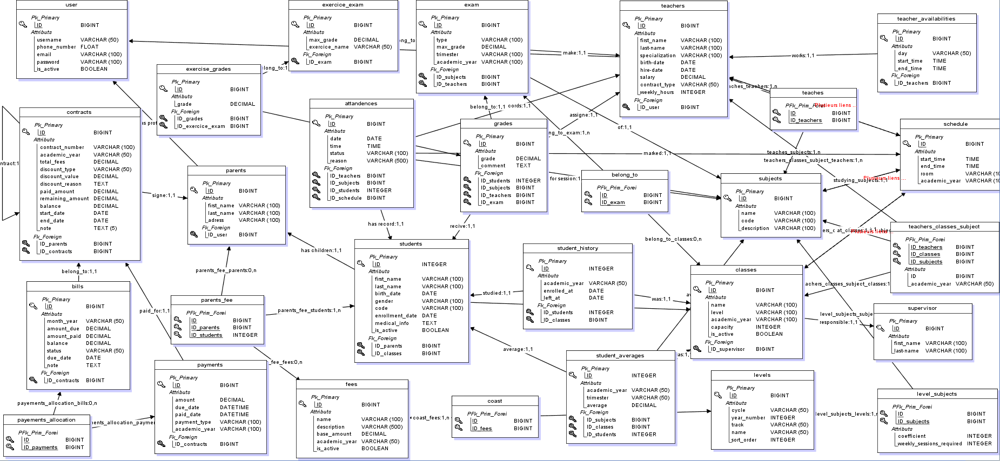

Design & Development of a Full-Stack School Management Platform
RESTful API · Web Admin Dashboard · Parent Mobile App
✦
Acknowledgements
I would like to express my sincere gratitude to the entire academic team at FITYA for the
quality of the training provided throughout my studies.
My warmest thanks go to my internship supervisor for his valuable guidance, availability, and constant support
throughout the development of this project.
I also thank all individuals who contributed, directly or indirectly, to the completion of this work, including
the future end-users who participated in the requirements-gathering interviews.
✦
Abstract
This report presents the work carried out during a final-year internship focused on the design and development
of SchoolHub, a comprehensive school management platform. The system consists of three main
components: a RESTful API built with Laravel 12, a web administration
dashboard developed with Vue.js 3 and TypeScript, and a Flutter mobile application
for parents and teachers. The platform covers all operational needs of a school: student and teacher management,
class organisation, academic grading, attendance tracking, financial contract management, and intelligent
schedule generation. The architecture follows an MVC/REST pattern with strict separation of concerns, role-based
access control (RBAC) across 7 user roles, and dedicated interfaces per actor type.
This report comprehensively documents the engineering work carried out during a final-year academic internship at
Fitya School, taking place between February and July 2026. Fitya School is a prominent Algerian
private educational institution located in Ben Telha, Baraki. The establishment caters to both Primary and CEM
(Middle School) educational levels. It has built a strong regional reputation not only for its uncompromising
teaching quality but also for its unique pedagogical approach—successfully instilling a high level of discipline
in its students by harmoniously blending rigorous academic standards with religious and moral education.
Despite its pedagogical success, the institution's administrative backbone required a digital transformation. The
internship project, named SchoolHub, was conceived to address a critical, real-world operational
bottleneck: the glaring absence of a unified, centralised digital management system capable of orchestrating
complex administrative, financial, and pedagogical operations in real-time. SchoolHub was architected from the
ground up as a production-ready, multi-platform ecosystem. It bridges the gap between administrators, educators,
and parents through a highly secure RESTful backend API (Laravel 12), an intuitive web administration dashboard
(Vue.js 3), and a responsive cross-platform mobile application (Flutter).
2. Problem Statement
A prevalent critical issue within the Algerian educational sector—and specifically at Fitya School prior to this
project—is the heavy, almost exclusive reliance on archaic paper-based workflows. The lack of digital tracking
introduces severe vulnerabilities into the school's daily operations. Physical documents are highly susceptible to
loss, damage, or misplacement, which directly leads to an unacceptable degradation in the quality of student
tracking, archival integrity, and administrative efficiency.
Furthermore, this fragmented, analog approach severely stifles communication. Without a digital bridge, parents
are left in the dark, forced to rely on infrequent physical report cards or manual phone calls to monitor their
children's academic progress, attendance, and disciplinary standing.
SchoolHub was engineered as a definitive, comprehensive solution to entirely eradicate these
pain points. By digitising the entire school lifecycle, the platform prevents data loss through secure cloud
storage, provides instantaneous detailed grade analytics, offers a live dashboard for meticulous attendance
tracking, introduces a robust and transparent financial management module for tuition and bills, and tackles the
historically tedious logistical nightmare of timetable creation via an intelligent, automated schedule generator.
3. Project Objectives
Build a robust RESTful API with Laravel 12 as the central business logic layer;
Develop a complete web administration dashboard with Vue.js 3 and TypeScript;
Create a cross-platform Flutter mobile application for parents and teachers;
Implement a Role-Based Access Control (RBAC) system with 7 distinct roles;
Cover all core school modules: students, teachers, classes, grades, attendance, payments, and schedules;
Develop an intelligent automatic schedule generator with constraint satisfaction;
Ensure security, performance, and code maintainability through industry best practices.
Chapter I-B – Host EnterpriseFitya School · Ben Telha,
Baraki
I-B. Host Enterprise — Fitya School
1. Overview & History
Founded in 2005, Fitya School is a leading Algerian private educational
institution
situated in the Ben Telha district of Baraki, Algiers. Over two decades of continuous operation,
the school has grown into a well-regarded academic community serving hundreds of students each year across two
educational cycles. Its name — Fitya (فتية), meaning
“youth” in Arabic — reflects the institution’s deep commitment to nurturing the next
generation with both academic rigour and strong ethical values.
Fitya School has earned a strong regional reputation for its dual-track pedagogical philosophy:
combining the formal Algerian national curriculum with a dedicated programme of moral, civic, and Islamic
education.
This holistic approach equips students not only with academic knowledge but with the discipline, character, and
social responsibility needed to thrive in modern society.
2. Educational Specialties
🏫
Primary Education (École Primaire)
Covering grades 1 through 5, the primary cycle focuses on foundational literacy,
numeracy, and a structured introduction to Arabic, French, and Islamic studies, following the official
national programme.
📚
Middle School (CEM)
The Collège d’Enseignement Moyen (CEM) cycle (grades 6–9)
deepens scientific, literary, and civic education. Students are prepared for the Brevet national
examination with intensive academic tracking.
🕌
Moral & Religious Education
A distinctive pillar of Fitya’s identity: Quranic studies, Islamic ethics,
and character-building are integrated throughout both cycles, shaping disciplined and respectful
students from an early age.
🌐
Multilingual Programme
Arabic as the primary language of instruction, with French systematically
introduced from primary level, reflecting the bilingual reality of Algerian academic and professional
life.
📐
STEM Focus
Mathematics and Sciences receive heightened attention through regular assessments,
competitions, and intensive revision sessions, consistently producing high-performing graduates at
the CEM exit exam.
💻
Digitalization Initiative
As of 2026, Fitya is actively transitioning its entire administrative and
pedagogical infrastructure to a digital-first model — the primary mission behind the
SchoolHub internship project.
3. Organisational Structure
Fitya School operates under a clear hierarchical structure ensuring tight coordination between academic,
administrative, and financial departments. Governance flows from the Owner at the apex,
through the General Manager, and branches into four main operational pillars: Directors,
Secretariat, Digitalization, and Accounting.
graph TD
A["Owner"]
B["General Manager"]
C["Directors"]
D["Teachers"]
E["Supervisors"]
F["Secretariat"]
G["Digitalization Manager"]
H["Mechta Abdelmoumen - Intern Developer"]
I["Accountant"]
A --> B
B --> C
B --> F
B --> G
B --> I
C --> D
C --> E
G --> H
style A fill:#1a3a6b,stroke:#1a3a6b,color:#fff
style B fill:#1e4d8c,stroke:#1e4d8c,color:#fff
style C fill:#2563a8,stroke:#2563a8,color:#fff
style D fill:#2563a8,stroke:#1e4d8c,color:#fff
style E fill:#2563a8,stroke:#1e4d8c,color:#fff
style F fill:#2563a8,stroke:#2563a8,color:#fff
style G fill:#065f46,stroke:#065f46,color:#fff
style H fill:#f59e0b,stroke:#d97706,color:#fff
style I fill:#2563a8,stroke:#2563a8,color:#fff
Figure 1: Fitya School — Organisational Chart. The intern
(highlighted in amber) was positioned under the Digitalization Manager with direct cross-departmental access at
all levels.
4. My Role & Position
⭐ Intern Developer — Digitalization Department
Although formally placed under the Digitalization Manager, the nature of the SchoolHub
project demanded constant, direct interaction with every branch of the school’s hierarchy.
Requirements were gathered directly from Directors, Supervisors, Secretariat staff, and the Accountant.
Crucially, I maintained direct communication with the General Manager throughout the
entire project — bypassing bureaucratic layers and enabling rapid, autonomous decision-making
without requiring intermediate approvals. This trust reflected the school’s recognition of the
project’s strategic importance to the institution’s digital future.
This privileged cross-departmental access was essential: designing a system that correctly models seven
distinct user roles demanded first-hand understanding of each actor’s daily workflow, pain points,
and data needs. The trust placed in me by the school’s leadership translated directly into a platform
that genuinely reflects the institution’s operational reality rather than a generic, off-the-shelf
solution.
Aspect
Detail
Host Institution
Fitya School — Private Educational Institution
Location
Ben Telha, Baraki, Algiers, Algeria
Founded
2005
Educational Cycles
Primary (Grades 1–5) & CEM / Middle School (Grades 6–9)
My Department
Digitalization Department
Direct Supervisor
Digitalization Manager
Key Stakeholder Contact
General Manager (direct line of communication throughout)
Internship Period
February 2026 – July 2026 (5 months)
Autonomy Level
High — cross-departmental access, no intermediate approval required
Functional requirements were gathered through stakeholder interviews and analysed as user stories, grouped into
eight functional modules:
User & Auth Management
Multi-role account creation & activation
Token-based authentication per role
Password management & RBAC enforcement
Data visibility restricted by assigned level for Directors and Supervisors
Student Management
Full student profile (personal & medical)
Class assignment & parent linking
Unique student code generation
Students assignments tracking
Teacher Management
Teacher profiles with specialisations
Weekly availability management
Contract type & workload tracking
Teacher assignments distribution
Classes & Subjects
Levels management and Multi-level class organisation
Class–Subject–Teacher pivot assignments
Subject coefficients per level
Grading & Report Cards
Multiple exam types with bulk entry
Weighted average computation
Class ranking & report cards
Comprehensive grades report generation
Attendance Tracking
Session-level daily tracking
Statuses: present / absent / late / excused
Per-student & per-class statistics
Payments & Contracts
Fee configuration by admin
Parent–school contract with auto-billing
Partial payments, advances, refunds
Schedule Management
Automatic constraint-based generation
Manual conflict detection
Weekly view per class / teacher
3. Non-Functional Requirements
Security: Token-based auth (Laravel Sanctum), bcrypt password hashing, SQL injection
prevention via Eloquent ORM, CSRF protection, input validation via FormRequests.
Performance: Paginated responses, optimised DB indexes on critical columns, API responses
under 200 ms for standard queries.
Maintainability: PSR-12 coding standards, separation of concerns (Controllers / Services /
Models), 100 KB+ of Markdown documentation.
Portability: API compatible with SQLite, MySQL, and PostgreSQL; mobile app targets Android
and iOS.
Multi-language: Mobile app supports Arabic (RTL), French, and English.
4. Project Management & Methodology
Agile & Scrum Workflow
To ensure the successful and timely delivery of a system of this magnitude, a rigorous Agile software development
lifecycle (SDLC) was adopted. The project management was orchestrated using GitHub Projects, functioning as a
Kanban board to continuously track sprint progress, backlog items, and bug fixes. Before writing a single line of
code, the entire system was mapped out using a Work Breakdown Structure (WBS), which systematically deconstructed
complex deliverables into manageable, verifiable tasks.
This WBS was subsequently translated into a highly detailed GANTT chart, dictating sprint deadlines, milestones,
and integration phases. Through disciplined adherence to this Agile methodology and daily progress tracking, I was
able to entirely avoid the common pitfall of scope creep. The predicted timeline was perfectly respected without a
single day of delay. To visually corroborate this precise time management, the original projected GANTT chart
alongside the actual executed timeline are presented both at the beginning and the end of this report.
Figure 2: Gantt Chart showing the temporal planning and critical path tasks
from February to July 2026.
Version Control & Branching Strategy
Professional Git version control was a non-negotiable requirement for maintaining codebase integrity across the
API, Web Dashboard, and Mobile App. GitHub served as the central hub for all source code. A strict
feature-branching strategy was enforced: every new feature, bug fix, or architectural change was developed in
absolute isolation on a dedicated branch.
Only after thorough local testing was a branch permitted to be merged. To facilitate continuous delivery and safe
deployment for the school's administration, the project architecture was split into two strictly isolated main
repositories:
Beta Repository (Production): The highly stable, deployed version of the application. This is
the live environment currently being utilised by Fitya School's administration for daily operations. Code only
enters this repository after passing all validation checks.
Main Repository (Development): The complete, bleeding-edge project containing all source
code, experimental features, comprehensive documentation, and the latest integrated components waiting for the
next release cycle.
Chapter III – System Design & ConceptionSchoolHub
III. System Design & Conception
1. Global Architecture
SchoolHub follows a 3-Tier architecture with a strict separation between presentation
(Web/Mobile clients), business logic (REST API), and data persistence (relational database).
The basic use case diagram identifies the core actors interacting with the system: the Administrator, Teacher,
and Parent.
Figure 3: Basic Use Case Diagram — Core actors (Administrator, Teacher,
Parent) and their primary system interactions.
Detailed Use Case Diagram
The detailed use case diagram expands upon the core roles to encompass all system actors, including Directors,
Secretariat, Accountants, and Supervisors, grouped by their operational domains.
Figure 4: Detailed Use Case Diagram — Comprehensive view of all actors and
use cases structured by domain.
Chapter III – Class DiagramSchoolHub
3. Data Modeling (MCD & MLD)
To ensure a robust and normalized database architecture, the system's data structure was designed using the
Merise methodology, starting with a Conceptual Data Model (MCD) and translating it into a Logical Data Model
(MLD).
Conceptual Data Model (MCD)
The Conceptual Data Model (MCD) defines the high-level business entities (such as Students,
Teachers, Classes, and Contracts) and the semantic relationships between them without concerning itself with
technical database implementation details. It maps out cardinalities (e.g., 1,n or 1,1) to establish business
rules.
Figure 5: Conceptual Data Model (MCD) — Illustrating core business entities
and their semantic relationships.
Logical Data Model (MLD)
The Logical Data Model (MLD) translates the MCD into a relational database schema. It resolves
many-to-many relationships into junction tables (e.g., teachers_classes_subject), assigns strict data
types, and defines primary keys (PK) and foreign keys (FK) to maintain referential integrity.

Figure 6: Logical Data Model (MLD) — Representing the strict relational
schema with foreign keys and junction tables.
Chapter III – Database SchemaSchoolHub
4. Database Schema
The relational database is strictly aligned with the MLD, consisting of 25 core tables designed
to ensure normalization and data integrity. The schema below details these tables and their key relationships:
Table
Key Columns
Primary FK
Notes
users
id, username, email, password, role, is_active
—
Roles: admin, teacher, parent, supervisor, secretariat, accountant, director
Key Design Decision: The class_subject_teacher pivot table is the backbone of the
academic system — it links a class, a subject, and a teacher for a given academic year. All schedules, grades
(via exams), and attendance records trace back to this pivot.
The schedule generation algorithm is the most complex feature of SchoolHub. It resolves a constraint-satisfaction
problem to assign teaching sessions to time slots without conflicts. The algorithm operates through the following
core phases:
1. Initialization & Priority Sorting: It fetches all ClassSubjectTeacher demands
and sorts them. Permanent teachers and high-coefficient subjects (e.g., Mathematics, Physics) are scheduled
first to ensure they get the best available time slots.
2. Special Case Handling: Certain subjects like "Sport" require consecutive 2-hour blocks
rather than single sessions. The algorithm identifies these and searches for contiguous free blocks exclusively.
3. Hard Constraints: Every potential slot is filtered through strict, non-negotiable rules. A
slot is instantly rejected if the teacher is already booked, the class is occupied, it falls outside the
teacher's availability, or it exceeds the daily session limit for the class.
4. Soft Scoring System: For slots that pass all hard constraints, a scoring system determines
the optimal choice. It awards points for ideal placements (e.g., +50 points for placing a major subject in the
morning) and penalizes poor placements (e.g., -40 points if a teacher is assigned too many consecutive hours).
5. Fallback Strategy: If no slot satisfies the optimal conditions, the system enters a
fallback mode, slightly relaxing soft constraints to ensure the class is scheduled before ultimately marking a
session as "unfilled" for manual review.
flowchart TD
A([▶ START]) --> B["Fetch all ClassSubjectTeacher\nassignments for academic year"]
B --> C["Sort by: Teacher contract type\nthen Subject coefficient desc"]
C --> D{More assignments\nto schedule?}
D -- No --> Z([✓ END — Save or Preview])
D -- Yes --> E["Get next assignment demand"]
E --> F{Is subject Sport\nAND required = 2h?}
F -- Yes --> G["Search for 2 consecutive\nfree 1-hour slots\nfor teacher + class"]
G --> H{Block found?}
H -- Yes --> I["Allocate both hours\nupdate tracking arrays"]
H -- No --> J["Mark as UNFILLED\ncall diagnoseUnfilledReason()"]
J --> D
F -- No --> K{Remaining required\nsessions > 0?}
K -- No --> D
K -- Yes --> L["Evaluate all days & slots\nvia findBestSlotForDemand()"]
subgraph Constraints["Hard Constraints (Must Pass)"]
direction LR
HC1["✗ Teacher already booked"]
HC2["✗ Class already booked"]
HC3["✗ Teacher outside availability"]
HC4["✗ Class has 7+ sessions today"]
HC5["✗ Internal schedule gap"]
end
subgraph Scoring["Soft Scoring System"]
direction LR
S1["+50 Important subject in morning"]
S2["-20 Important subject in afternoon"]
S3["+10 Perm. teacher under 4h today"]
S4["-40 Perm. teacher at 6h+ today"]
S5["-30 Contract teacher at 6h+ today"]
end
L --> M{Constraints passed?}
M -- No --> N[Skip this slot]
N --> L
M -- Yes --> O["Compute score\nvia Scoring System"]
O --> P{Best slot found?}
P -- No --> Q["Try Fallback Mode\nignore 'important subject' daily limit"]
Q --> R{Fallback slot found?}
R -- Yes --> S["Allocate 1-hour session\nupdate tracking arrays"]
R -- No --> J
P -- Yes --> S
S --> D
I --> D
style A fill:#1a3a6b,color:#fff,stroke:#1a3a6b
style Z fill:#065f46,color:#fff,stroke:#065f46
style J fill:#991b1b,color:#fff,stroke:#991b1b
style Constraints fill:#fef2f2,stroke:#fca5a5
style Scoring fill:#f0fdf4,stroke:#86efac
Chapter III – Activity Diagrams (continued)SchoolHub
Activity Diagram 2 — Payment Processing Workflow
The payment system uses an automatic allocation engine that distributes a received payment across unpaid monthly
bills in chronological order. Key steps include:
Validation: The system verifies the contract and creates a base payment record.
Bill Allocation: Unpaid bills are fetched chronologically. The system applies the payment to
fully or partially pay off the oldest bills first.
Handling Overpayments: If the payment amount exceeds the total due across all bills, the
remainder is stored as a positive balance (credit) on the contract for future use.
flowchart TD
A([▶ START: Admin submits payment]) --> B["Validate request\ncontract_id, amount, payment_type"]
B --> C{Contract exists\nand is active?}
C -- No --> ERR1["Return 404\n'Contract not found'"]
C -- Yes --> D["Create Payment record\nstatus = 'completed'"]
D --> E["Fetch unpaid bills\nordered by due_date ASC"]
E --> F["Set remaining = payment.amount"]
F --> G{Remaining > 0\nAND unpaid bills exist?}
G -- No --> H{remaining > 0?}
H -- Yes --> I["Store as contract.balance\nCredit for future use"]
H -- No --> J["Update contract totals\npaid_amount += amount\nremaining_amount -= amount"]
I --> J
G -- Yes --> K["Take next unpaid bill"]
K --> L{remaining >= bill.balance?}
L -- Yes --> M["Fully pay this bill\nbill.status = 'paid'\nbill.amount_paid = bill.amount_due"]
L -- No --> N["Partially pay this bill\nbill.status = 'partial'\nbill.amount_paid += remaining"]
M --> O["remaining -= bill.balance\nCreate PaymentAllocation record"]
N --> O2["remaining = 0\nCreate PaymentAllocation record"]
O --> G
O2 --> G
J --> Z([✓ Return payment with allocations])
style A fill:#1a3a6b,color:#fff,stroke:#1a3a6b
style Z fill:#065f46,color:#fff,stroke:#065f46
style ERR1 fill:#991b1b,color:#fff,stroke:#991b1b
style I fill:#f59e0b,color:#fff,stroke:#b45309
Figure 8: Activity Diagram — Payment Processing & Automatic Bill
Allocation Engine. Handles full, partial, advance, and overpayment scenarios.
Activity Diagram 3 — Contract Creation
This workflow maps out how financial agreements are established between the school and parents at the beginning
of the academic year:
Fee Selection: The admin selects applicable fees (tuition, transport, canteen, etc.) and the
system calculates the base total.
Discounts: Any fixed or percentage-based discounts are applied to determine the final total
fees.
Installment Generation: The final total is divided across the academic months, automatically
generating individual monthly bills (e.g., 10 bills for a 10-month school year) tied to the new contract.
flowchart LR
A([▶ Admin creates contract]) --> B["Select parent &\nfee_ids for academic year"]
B --> C["Calculate total_fees\nfrom selected fees"]
C --> D{Discount\napplied?}
D -- Yes --> E["Apply discount\npercentage or fixed"]
D -- No --> F
E --> F["Compute monthly_amount\n= final_total / num_months"]
F --> G["Create Contract record\nwith unique contract_number"]
G --> H["Create parents_fees\njunction records"]
H --> I{For each month\nfrom start_date to end_date}
I -- More months --> J["Generate Bill record\nmonth_year, amount_due, due_date"]
J --> I
I -- Done --> K(["✓ Return contract + bills\n10 monthly bills generated"])
style A fill:#1a3a6b,color:#fff,stroke:#1a3a6b
style K fill:#065f46,color:#fff,stroke:#065f46
Figure 9: Activity Diagram — Contract Creation and Automatic Monthly Bill
Generation Workflow.
Chapter III – Sequence DiagramsSchoolHub
6. Sequence Diagrams
Sequence Diagram 1 — User Authentication Flow
This diagram illustrates the complete authentication flow for any user (admin, teacher, or parent) across both
the Web dashboard and the Mobile application.
sequenceDiagram
actor User as User
participant Client as Web/Mobile Client
participant API as Laravel API
participant DB as Database
participant Auth as Sanctum Auth
User->>Client: Enter email & password
Client->>API: POST /api/login\n{email, password}
API->>DB: Query users WHERE email = ?
DB-->>API: Return User record
alt User not found
API-->>Client: 401 Unauthorized\n"Invalid credentials"
Client-->>User: Show error message
else User found but inactive
API-->>Client: 403 Forbidden\n"Account deactivated"
Client-->>User: Show "Account disabled"
else Valid credentials
API->>Auth: Hash & compare password (bcrypt)
Auth-->>API: Password valid ✓
API->>Auth: Create Sanctum token\n(expiry depends on role)
Auth-->>API: Bearer token
API->>DB: Log token in personal_access_tokens
DB-->>API: Token saved
API-->>Client: 200 OK\n{token, user{id,role,email,...}}
Client->>Client: Store token (localStorage / SecureStorage)
Client-->>User: Redirect to role-specific dashboard
end
Figure 10: Sequence Diagram — User Authentication Flow with Sanctum token
generation and role-based routing.
This sequence illustrates the process of bulk grade submission, emphasizing the role-based security and data
validation layers:
Access Control: The system verifies the teacher's identity and ensures they are only
accessing classes they are explicitly assigned to teach.
Data Retrieval: The API fetches the list of students enrolled in the specific class.
Bulk Submission & Validation: The teacher submits an array of grades. The API validates each
grade (e.g., ensuring it does not exceed the exam's maximum grade) before performing a bulk database insert for
performance efficiency.
sequenceDiagram
actor T as Teacher
participant Web as Web Dashboard
participant API as Laravel API
participant MW as Role Middleware
participant DB as Database
T->>Web: Navigate to My Class > Enter Grades
Web->>API: GET /api/teacher/classes\nAuthorization: Bearer {token}
API->>MW: Check role = teacher ✓
MW->>DB: Fetch teacher's assigned classes
DB-->>Web: Return class list
T->>Web: Select class + subject + exam type
Web->>API: GET /api/classes/{id}/students
DB-->>Web: Return student list
T->>Web: Fill grade form for all students
Web->>API: POST /api/grades/bulk\n{grades:[{student_id, exam_id, grade},...]}
API->>MW: Check role in [teacher, admin] ✓
API->>API: Validate each grade entry\n(max_grade, student belongs to class)
alt Validation fails
API-->>Web: 422 Unprocessable Entity\n{errors: {...}}
Web-->>T: Show field errors
else Validation passes
API->>DB: Bulk insert Grade records
DB-->>API: N records created
API-->>Web: 201 Created\n{success:true, count: N}
Web-->>T: "Grades saved successfully ✓"
end
This flow shows how the mobile app retrieves a child's full academic report card, demonstrating the
parent-specific access control:
Ownership Verification: The middleware strictly queries the database to confirm that the
requested student ID physically belongs to the authenticated parent.
Data Aggregation: Once access is granted, the database calculates weighted averages,
aggregates grades by subject, and determines the student's overall rank.
Presentation: The structured data is returned to the Flutter mobile app, which renders
intuitive visual charts for the parent.
sequenceDiagram
actor Parent as Parent
participant App as Flutter Mobile App
participant API as Laravel API
participant MW as Role Middleware
participant DB as Database
Parent->>App: Open "My Children" screen
App->>API: GET /api/parent/students\nBearer {token}
API->>MW: Verify role = parent ✓
MW->>DB: WHERE parent_id = auth()->user()->parent->id
DB-->>App: [{student_id, name, class, ...}]
Parent->>App: Tap child's name
App->>API: GET /api/parent/students/{id}/report-card\nBearer {token}
API->>MW: Verify role = parent ✓
MW->>DB: Verify student.parent_id == auth parent
alt Student not owned by this parent
DB-->>API: No record
API-->>App: 403 Forbidden\n"Access denied"
App-->>Parent: "You cannot view this student"
else Access granted
DB->>DB: Aggregate grades by subject\nCalculate weighted averages\nGenerate class ranking
DB-->>API: Report card data
API-->>App: 200 OK\n{student, subjects:[{name, grades, average}], overall_average, rank}
App->>App: Render report card UI\nwith charts (FL Chart)
App-->>Parent: Display full report card
end
This diagram breaks down the technical execution of a payment transaction at the API level:
API Request & Validation: The admin submits the payment details, which are sanitized and
validated by Laravel FormRequests.
Service Delegation: The controller delegates the heavy lifting to a dedicated
PaymentService class to keep the controller clean.
Database Transactions: The service loops through unpaid bills, updating statuses and
inserting pivot records (allocations) in a single transaction loop to ensure data consistency.
sequenceDiagram
actor Admin as Admin
participant Web as Web Dashboard
participant API as Laravel API
participant PaySvc as PaymentService
participant DB as Database
Admin->>Web: Open contract, enter payment amount
Web->>API: POST /api/payments\n{contract_id, amount, payment_type, paid_date}
API->>API: Validate request (FormRequest)
API->>DB: Fetch Contract + all unpaid Bills (ordered by due_date)
DB-->>API: Contract & Bill list
API->>PaySvc: allocatePayment(payment, bills)
loop For each unpaid bill while remaining > 0
PaySvc->>DB: Update Bill (amount_paid, status)
PaySvc->>DB: Insert PaymentAllocation record
DB-->>PaySvc: OK
end
alt Overpayment
PaySvc->>DB: Update contract.balance += overpayment
end
PaySvc->>DB: Update Contract (paid_amount, remaining_amount)
DB-->>API: Contract updated
API-->>Web: 201 Created\n{payment, allocations:[...], overpayment}
Web-->>Admin: Show payment receipt with bill breakdown
Figure 13: Sequence Diagram — Admin payment processing with automatic bill
allocation service.
Chapter III – Feature Deep-Dive: Grading SystemSchoolHub
The grading system is one of the most intricate academic modules in SchoolHub. It operates across three exam
types (evaluation_continue — continuous assessment, devoir — written test, and
composition — trimester exam), computes weighted subject averages using level-specific coefficients,
and generates individual academic report cards as well as class-level analytics reports with full statistical
breakdowns.
How Averages & Report Cards Are Built
Grades are never stored as pre-calculated averages. Each raw grade is stored individually
against the exam that produced it. The GradingService is responsible for computing averages on demand
using the following formula:
All raw grades are normalised to /20 using: (grade / max_grade) × 20
Computed averages are cached in the student_averages table (keyed by student_id,
subject_id, trimester, academic_year, record_type) and are
invalidated whenever a grade is created, updated, or deleted via Laravel Model Observers.
Sequence Diagram — Grades Report Card Generation
sequenceDiagram
actor Admin as 🖥 Admin / Teacher
participant Web as Vue.js Dashboard
participant API as Laravel API
participant GS as GradingService
participant DB as Database
Admin->>Web: Select Class → Semester → Generate Report Card
Web->>API: GET /api/students/{id}/report-card?semester=S1&academic_year=2025-2026
API->>DB: Fetch StudentAverages (record_type = subject & overall)
DB-->>API: Pre-computed averages per subject
API->>DB: Fetch raw Grades grouped by subject_id
DB-->>API: Raw grade records with exam details
API->>DB: Fetch LevelSubject coefficients for student's level
DB-->>API: {subject_id, coefficient} per subject
API->>GS: formatSubjects(averages, rawGrades, coefficients)
GS->>GS: Normalise each grade to /20\nMap CC / Devoir / Composition per subject\nCompute weighted_average = avg × coefficient
GS-->>API: [{subject, teacher, CC, devoir, composition,\naverage, coefficient, weighted_average}]
API-->>Web: 200 OK {student, subjects[], overall_average}
Web->>Web: Render report card table\nwith Chart.js bar chart (averages per subject)
Web-->>Admin: Display printable report card
Figure 14: Sequence Diagram — Full report card generation flow from
database fetch to formatted output.
Grades Analytics Overview Endpoint
In addition to individual report cards, SchoolHub provides a powerful analytics endpoint
(GET /api/grades/analytics/overview) that computes aggregated statistics for any combination of
class, subject, semester, teacher, or exam type. This endpoint powers the GradeAnalytics.vue
dashboard view (137 KB — the largest component in the project).
Metric
SQL Aggregation
Purpose
Overall Average
AVG((grade/max_grade)×20)
Class-wide performance baseline
Pass Rate
AVG(CASE WHEN normalised ≥ 10 THEN 1 ELSE 0 END) × 100
Percentage of students above 10/20
Excellence Rate
AVG(CASE WHEN normalised ≥ 16 THEN 1 ELSE 0 END) × 100
Percentage of high performers
Standard Deviation
STDDEV_POP(normalised)
Measure of grade spread/consistency
Per-Subject Breakdown
GROUP BY subject_id with avg, min, max, pass_rate
Identify weak/strong subjects across a class
Results are cached for 10 minutes using Laravel's Cache facade (keyed by an MD5 hash of all filter parameters),
reducing repeated DB load during busy report periods.
Class Ranking
The class ranking (GET /api/classes/{id}/ranking) is generated by reading from the
student_averages table (overall record), ordering by average descending, and assigning sequential
rank positions. This allows teachers and directors to instantly identify top-performing and at-risk students.
flowchart LR
A(["Teacher / Admin request ranking"]) --> B["GET /api/classes/42/ranking\n?semester=S1 and
academic_year=2025-2026"]
B --> C["Query student_averages\nWHERE class_id=42\nAND record_type='overall'\nAND trimester='S1'\nORDER BY
average DESC"]
C --> D["Map results:\nrank = index + 1\nstudent.name, student.code,\noverall_average"]
D --> E["Return ranked list\nrankings: student, average, rank"]
style A fill:#1a3a6b,color:#fff
style E fill:#065f46,color:#fff
Figure 15: Activity Diagram — Class ranking generation from pre-computed
student averages table.
Chapter III – Feature Deep-Dive: Levels & RBAC VisibilitySchoolHub
8. Feature Deep-Dive: Levels Management & Role-Scoped Data Visibility
Levels Management
The Level entity is the structural backbone of the school's academic hierarchy. A level
represents an educational grade (e.g., 1ère Année Primaire, 5ème Année Primaire, 1ère
CEM), and belongs to one of two cycles: primaire (primary school) or
cem (middle school). Each level contains multiple classes, defines the subjects taught within it, and
sets the coefficient for each subject via the level_subjects pivot table.
levels Table Column
Type
Description
id
INT PK
Auto-incremented primary key
cycle
ENUM('primaire', 'cem')
Educational cycle this level belongs to
year_number
INT
Year within the cycle (1–5 for primary, 1–4 for CEM)
track
VARCHAR nullable
Academic track (e.g., Sciences, Lettres — used in CEM final year)
name
VARCHAR
Display name (e.g., "5ème Année Primaire")
sort_order
INT
Custom sort order for display in UI lists
The level_subjects pivot ties subjects to levels with a coefficient and a
weekly_sessions_required field used by the schedule generator. The LevelController
exposes CRUD endpoints to manage levels, and a dedicated SubjectCoefficientController manages the
per-level subject coefficient assignments.
Design Insight: Separating the subject coefficient from the subject itself (via
level_subjects) allows the same subject — e.g., "Mathematics" — to carry different weights at
different levels. For example, Math might have a coefficient of 5 in 5ème Primaire but 7 in 3ème CEM, without
duplicating subject records.
How Director-Level Data Scoping Works
SchoolHub implements a two-tier directorial role: the Admin has global access to all data, while
a Director is scoped exclusively to their assigned cycle (primaire or
cem). This scoping is enforced transparently at the API query level — the Director doesn't need to
pass any filter; the middleware applies it automatically.
flowchart TD
A(["Director sends API request"]) --> B{"Is user a Director?"}
B -- No --> C["Execute query normally\nAll data returned"]
B -- Yes --> D["Call user directorCycle()\nReturns: primaire OR cem"]
D --> E["Inject automatic WHERE clause\nWHERE levels.cycle = primaire\nvia whereHas on
student.class.levelProfile"]
E --> F["Execute filtered query"]
F --> G["Return ONLY data belonging\nto the Director's cycle"]
style A fill:#1a3a6b,color:#fff
style C fill:#065f46,color:#fff
style G fill:#065f46,color:#fff
Figure 16: Activity Diagram — Automatic cycle-based data scoping for
Director role across all grade, student, and analytics queries.
Technical Implementation — Director Scoping
The scoping logic lives inside the applyGradeFilters() private method of
GradeController. It checks whether the authenticated user has the isDirector() method,
then automatically chaines a whereHas constraint on the Eloquent query to filter by cycle:
This same pattern is replicated in the analytics overview endpoint, the exercise-averages aggregation, and the
supervisor panel — ensuring that no single query leaks data across cycle boundaries, regardless
of which endpoint is called.
Role Visibility Matrix
Role
Students
Grades/Analytics
Attendance
Payments
Scope
Admin
✅ All
✅ All
✅ All
✅ All
Global (unrestricted)
Director (Primaire)
✅ Primaire only
✅ Primaire only
✅ Primaire only
❌ No access
Auto-filtered by cycle = primaire
Director (CEM)
✅ CEM only
✅ CEM only
✅ CEM only
❌ No access
Auto-filtered by cycle = cem
Supervisor
✅ Own level
❌ No access
✅ Own level
❌ No access
Filtered by supervisor's assigned level_id
Teacher
✅ Own classes
✅ Own classes only
❌ No access
❌ No access
Filtered by teacher_id
Parent
✅ Own children
✅ Own children only
✅ Own children
✅ Own contracts
Filtered by parent_id + student ownership check
Secretariat
✅ Full control
❌ No access
❌ No access
❌ No access
Full student data management only
Accountant
❌ No access
❌ No access
❌ No access
✅ Full access
Financial module only
Chapter III – Feature Deep-Dive: AssignmentsSchoolHub
9.1 — The Central Pivot: ClassSubjectTeacher (CST)
Both student assignments and teacher assignments converge on a single, central database pivot: the
teachers_classes_subject table (modelled as ClassSubjectTeacher in
Eloquent). This pivot is the engine that connects every academic entity together and serves as the anchor for
schedules, grades, and attendance records.
%%{init: {'theme': 'base', 'themeVariables': {'primaryColor': '#1a3a6b', 'primaryTextColor': '#000000',
'primaryBorderColor': '#1a3a6b', 'lineColor': '#2563a8', 'secondaryColor': '#eff6ff',
'attributeBackgroundColorEven': '#f0f4ff', 'attributeBackgroundColorOdd': '#e0eaff', 'fontFamily': 'Inter,
sans-serif'}}}%%
erDiagram
TEACHER ||--o{ CST : "teaches"
CLASSES ||--o{ CST : "has sessions in"
SUBJECTS ||--o{ CST : "taught via"
CST ||--o{ SCHEDULE : "generates"
CST ||--o{ EXAM : "produces"
EXAM ||--o{ GRADE : "is graded by"
GRADE }o--|| STUDENT : "belongs to"
STUDENT }o--|| CLASSES : "enrolled in"
CST {
int id
int teacher_id
int class_id
int subject_id
string academic_year
}
SCHEDULE {
int id
int cst_id
enum day
time start_time
time end_time
string room
}
EXAM {
int id
int subject_id
int teacher_id
enum exam_type
decimal max_grade
string semester
}
Figure 17: Entity-Relationship Diagram — The ClassSubjectTeacher (CST)
pivot as the academic system backbone connecting teachers, classes, subjects, schedules, exams, and grades.
9.2 — Teacher Assignments
When an administrator assigns a teacher to teach a specific subject in a specific class for an academic year, a
ClassSubjectTeacher record is created. This assignment is handled via the
ClassSubjectTeacherController and enforces the following business rules:
No double assignment: A teacher cannot be assigned the same subject in the same class twice
for the same academic year (unique constraint on
[class_id, subject_id, teacher_id, academic_year]).
Subject eligibility: Only subjects that exist in the class's level's
level_subjects table can be assigned, ensuring pedagogical coherence.
Workload tracking: Each teacher's total assigned weekly sessions are aggregated from the
schedule records tied to their CST entries, allowing the admin to monitor and balance teacher workloads.
sequenceDiagram
actor Admin as 🖥 Admin
participant Web as Vue.js Dashboard
participant API as Laravel API
participant DB as Database
Admin->>Web: Classes → Select Class → Assign Teacher to Subject
Web->>API: GET /api/teachers (fetch available teachers)
DB-->>Web: [{teacher_id, name, specialization, weekly_hours}]
Admin->>Web: Select Teacher + Subject + click "Assign"
Web->>API: POST /api/class-subject-teachers\n{class_id, teacher_id, subject_id, academic_year}
API->>DB: Check duplicate: WHERE class_id + subject_id + academic_year
alt Already assigned
DB-->>API: Record exists
API-->>Web: 422 "This subject is already assigned in this class"
else Not yet assigned
API->>DB: INSERT INTO teachers_classes_subject
DB-->>API: New CST record (id: 87)
API-->>Web: 201 Created {cst_id, teacher, class, subject}
Web-->>Admin: "Assignment saved ✓ — Schedule can now be generated"
end
Figure 18: Sequence Diagram — Admin assigns a teacher to teach a subject
in a class (CST creation flow).
9.3 — Student Assignments (Enrolling Students in Classes)
Student assignment refers to the process of enrolling a student into a school class for an academic year. This is
managed via the StudentController and the student_history table, which maintains a full
audit trail of every class the student has attended across academic years.
Initial enrollment: When a student is created, they are assigned to a class_id
directly on the students table (the "current" class).
Class transfer: When a student is moved to a different class (e.g., promoted or transferred),
the old record in student_history is closed with a left_at timestamp, and a new
history record is opened for the new class.
Capacity validation: The API checks the destination class's capacity before
allowing an enrollment to prevent over-filled classrooms.
Parent linking: Every student is linked to a parent_id, which is the parent
profile that will be able to access the student's data via the mobile app.
flowchart TD
A(["Admin creates or transfers a Student"]) --> B{"New student or transfer?"}
B -- New Student --> C["POST /api/students\nfirst_name, last_name, class_id,\nparent_id, birth_date, gender"]
C --> D{"class.capacity reached?"}
D -- Yes --> ERR["422 Class is full"]
D -- No --> E["INSERT students record\nGenerate unique student code\nFormat: SCH-YYYY-XXXXXX"]
E --> F["INSERT student_history record\nstudent_id, class_id, academic_year,\nenrolled_at = today"]
F --> G["201 Created - Student enrolled"]
B -- Transfer --> H["PATCH /api/students/id\nnew class_id"]
H --> D2{"New class capacity OK?"}
D2 -- No --> ERR
D2 -- Yes --> I["UPDATE students.class_id"]
I --> J["CLOSE old student_history\nleft_at = today"]
J --> K["OPEN new student_history\nclass_id = new, enrolled_at = today"]
K --> G
style A fill:#1a3a6b,color:#fff
style G fill:#065f46,color:#fff
style ERR fill:#991b1b,color:#fff
Figure 19: Activity Diagram — Student enrollment and class transfer flow
with history tracking and capacity validation.
API Endpoints for Assignments
GET/api/class-subject-teachersList all
CST assignments (filter by class_id, teacher_id, academic_year)
POST/api/class-subject-teachersCreate
a new teacher→subject→class assignment (CST record)
DEL/api/class-subject-teachers/{id}Remove a teacher assignment (cascades to schedule if not yet published)
GET/api/teachers/{id}/classesGet all
classes a specific teacher is currently assigned to
GET/api/classes/{id}/studentsGet the
full student roster for a class
POST/api/studentsEnroll a new student
(auto-generates unique student code + history record)
PUT/api/students/{id}Transfer student
to a new class (closes old history, opens new)
GET/api/students/{id}/historyFull
academic history of a student (all classes attended across years)
GET/api/levelsList all levels with
their cycle, year_number, and name
POST/api/levels/{id}/subjectsAssign a
subject to a level with a coefficient
PUT/api/levels/{id}/subjects/{subject_id}Update subject coefficient for a level
Chapter III – Feature Deep-Dive: AnalyticsSchoolHub
The system features a centralized dashboard that provides administrators and directors with a real-time overview
of the school's operational health. The DashboardController aggregates metrics across four key
pillars:
Overview: Total active students, teachers, and active classes.
Financials: Total revenue collected, pending payments, late payments, and the overall payment
collection rate.
Academics: The school-wide average grade across all subjects and exams for the current
academic year.
Attendance: A 30-day rolling aggregate of attendance rates, breaking down occurrences of
"present", "absent", "late", and "excused".
10.2 — Director Scoping in Analytics
The powerful cycle-based visibility logic (discussed in Section 8) extends deeply into the analytics engine. When
a Director requests dashboard metrics, the system automatically intervenes at the query level:
Metric Isolation: A Director of the Primaire cycle will only see the total student
count, average grade, and attendance rate specifically for primary students. The system
automatically chains
whereHas('class.levelProfile', function ($q) { $q->where('cycle', 'primaire'); }) to every
aggregate query.
Financial Restriction: Directors are fundamentally academic supervisors, not financial
officers. The dashboard logic recognizes the Director role and forces all financial metrics (revenue,
pending payments) to zero while hiding the recent payments feed, ensuring strict separation of
concerns.
10.3 — Bulk Attendance Processing
To accommodate the reality of classroom management, where teachers mark attendance for 30-40 students
simultaneously in a span of minutes, the system avoids generating dozens of individual API calls. Instead, it
utilizes a highly optimized bulkStore transaction:
public functionbulkStore(Request $request)
{
$records = $request->input('records', []);
return \DB::transaction(function () use ($records) { // Iterates over the payload and
processes updates or inserts // within a single atomic database
transaction. If any record fails // validation or database
constraints, the entire batch rolls back, // preventing corrupted or partial
attendance states.
});
}
This approach minimizes database connections and dramatically improves API response times during the morning
attendance rush hour, a critical non-functional requirement for the school.
Chapter III – Feature Deep-Dive: FinanceSchoolHub
11. Feature Deep-Dive: A Localized Financial System
11.1 — The Problem with Traditional Approaches
Most traditional or open-source school management systems follow a generic financial model: a flat "Tuition Fee"
is directly attached to the Student, and it is usually billed upfront per semester or per year.
However, this approach completely fails in the Algerian private school market due to several local realities:
Family-Centric Billing: Parents do not want separate invoices for each of their children.
They expect a single, unified bill that covers all their enrolled siblings.
A-la-carte Options: Fees are not flat. One sibling might use the school bus (Transport Fee)
and eat at the canteen (Canteen Fee), while another sibling might only pay basic tuition.
Monthly Installments: Paying upfront is rare. The cultural standard is to negotiate an annual
total (often with a sibling discount applied) and spread it out evenly over 10 or 12 monthly payments.
11.2 — The SchoolHub Solution: Parent-Level Contracts
To solve this, SchoolHub discards the "student-pays-tuition" model and introduces a robust Parent-Level
Contract system (ContractController). The architecture works as follows:
Contract Creation: The accountant creates a single Contract linked directly to
the Parent (parent_id).
Sibling Fee Selection: Inside the contract creation wizard, the accountant assigns specific,
modular fees to each individual sibling. The payload looks like this:
[{ student_id: 1, fee_ids: [Tuition, Canteen] }, { student_id: 2, fee_ids: [Tuition] }].
Dynamic Aggregation & Discounts: The system sums the base amounts of all selected fees
across all siblings. The accountant can then apply a global discount (e.g., a 10% sibling discount) to the grand
total.
Automated Monthly Billing: The final discounted amount is divided by the duration of the
contract (e.g., 10 months). The system then automatically generates a Bill for each month (e.g.,
"September 2026", "October 2026").
11.3 — Implementation Highlights
This localized approach is powered by the ParentFee pivot table, which creates a three-way junction
between the Parent, the Student, and the Fee. When a contract is generated, the backend automatically cascades the
generation of monthly bills:
When the parent opens their mobile app, they don't see confusing, overlapping invoices for each child. They
simply see one active contract, and a clean list of 10 monthly bills they need to pay, perfectly aligning the
software with local administrative expectations.
11.4 — Payment Allocation (FIFO) & Overpayments
Another major challenge is how parents physically pay. A parent might come to the administration desk and hand
over a bulk amount of cash (e.g., 60,000 DZD) without specifying exactly which month they are paying for. The
system must intelligently distribute this money.
SchoolHub uses a FIFO (First-In, First-Out) Waterfall Allocation algorithm located in the
PaymentController:
Waterfall Filling: The system fetches all unpaid or partially paid bills for the contract,
ordered by due_date (oldest first). It pours the payment amount into the first bill until it is
fully paid. If there is money left over, it spills over to the next bill, and so on.
Allocation Tracking: Instead of just updating the bill's status, the system generates precise
PaymentAllocation junction records. This creates a rigorous audit trail proving exactly which
fractions of a single payment went to which specific bills.
Overpayment Balance: If a parent pays more than the total sum of their currently due
bills (e.g., paying for the whole year in advance, or just rounding up the cash amount), the remainder does not
vanish. The loop safely exits, and the remaining amount is deposited into the balance column on the
Contract model. This acts as a localized credit wallet, ensuring financial integrity and trust.
Chapter III – Feature Deep-Dive: OperationsSchoolHub
12. Feature Deep-Dive: Attendance Tracking System
12.1 — A Multi-Dimensional Tracking Model
School attendance is often oversimplified as a boolean "present" or "absent" flag on a student for a given day.
However, in a middle school (CEM) environment, students move between different classrooms, subjects, and teachers
throughout the day. To accommodate this, SchoolHub uses a multi-dimensional Attendance model.
Rather than simply linking a student to a date, an attendance record in SchoolHub acts as a 4-way
junction connecting four distinct entities simultaneously:
%%{init: {"themeVariables": {"primaryTextColor": "#000000"}}}%%
erDiagram
STUDENT ||--o{ ATTENDANCE : "has"
TEACHER ||--o{ ATTENDANCE : "records"
SUBJECT ||--o{ ATTENDANCE : "involves"
SCHEDULE ||--o{ ATTENDANCE : "during"
ATTENDANCE {
int id PK
int student_id FK
int teacher_id FK
int subject_id FK
int schedule_id FK
date date
time time
string status "present | absent | late | excused"
string reason
}
12.2 — Why This Architecture?
By enforcing these foreign keys (student_id, teacher_id, subject_id, and
schedule_id), the system unlocks incredibly granular analytical capabilities:
Subject-Specific Truancy: We can query if a student is consistently skipping
Mathematics but attending History (filtering by subject_id).
Time-Based Trends: By filtering via schedule_id, the administration can identify
if lateness (status = 'late') is overwhelmingly concentrated in the first period of the morning
(8:00 AM).
Classroom & Teacher Context: The teacher_id records who was supposed to be
teaching the class. The director can query this to see if a specific teacher's classes have unusually high
absenteeism, which might indicate a problem with classroom management.
12.3 — Efficient Data Capture by Supervisors
In Algerian middle schools, teachers do not typically take attendance—this is the strict responsibility of the
Supervisors (Surveillants). To capture this complex web of data quickly, the supervisor uses the
web administration dashboard (often on a tablet or computer), which pulls the
schedule_id, subject_id, and teacher_id automatically from the active
timetable for the specific classroom they are inspecting. The supervisor simply clicks the names of students who
are absent or late. The backend then utilizes a bulkStore database transaction (as highlighted in
Section 10.3) to instantly generate all 30+ multi-dimensional records in a fraction of a second, ensuring the
morning rush hour does not overwhelm the server.
Chapter III-B – Technology ChoicesSchoolHub
III-B. Technology Choices & Justification
Before writing a single line of code, an evaluation of the available technology options was conducted for each
layer of the system. The selection criteria were: maturity, community support,
alignment with the school's operational constraints, cross-platform capability,
and long-term maintainability. The following section documents the alternatives considered and
the rationale behind each final choice.
More boilerplate; no official opinionated structure; JSX learning curve
Rejected
Angular
Fully opinionated, enterprise-grade
Heavy, steep learning curve, overkill for a single-school dashboard
Rejected
3. Mobile — Why Flutter over alternatives?
Framework
Pros
Cons
Decision
Flutter (Dart)
Single codebase for Android & iOS, native performance, rich widget system, RTL support built-in
Dart is niche; large app size
✔ Selected
React Native
JavaScript, large community
Bridge performance bottlenecks; inconsistent UI across platforms
Rejected
Native Android + iOS
Best performance, full platform APIs
Two separate codebases; 2× development time; unfeasible for a solo developer
Rejected
4. Database — Why MySQL over alternatives?
Database
Pros
Cons
Decision
MySQL 8
Industry standard, excellent Laravel ORM support, reliable relational integrity, free
Vertical scaling limitations at extreme scale
✔ Selected
PostgreSQL
Advanced features, JSON support
Slightly more configuration overhead; no specific benefit for this use case
Rejected
MongoDB (NoSQL)
Flexible schema
No relational integrity; complex joins impossible; completely misaligned with the highly relational school
data model
Rejected
5. Hosting & Deployment — Why DigitalOcean VPS?
A managed cloud solution (e.g. Heroku, Railway) would have been simpler but offered less control and higher
monthly cost at scale. A DigitalOcean Droplet (VPS) was selected for its predictable pricing,
full root access for Nginx + PHP-FPM configuration, and the ability to host all three project components (API,
static dashboard build, SSL certificates) on a single server, keeping operational costs under 10
USD/month.
All technology choices directly contributed to the project's success: the selected stack enabled a single
developer to independently build, test, and deploy a production-grade three-platform system within five months,
strictly on schedule.
Advanced grade analytics with charts, filters, rankings
137 KB
AdminAttendance.vue
Full attendance management per class/date/subject
57 KB
Classes.vue
Class CRUD, student assignment, subject management
67 KB
Teachers.vue
Teacher profiles, subject assignments, workload
63 KB
Students.vue
Student list, filters, profile management
43 KB
ContractCreate.vue
Multi-step contract creation wizard
26 KB
ScheduleGenerator.vue
Trigger schedule generation, view results by class
9 KB
SupervisorPanel.vue
Level supervisor: classes and attendance overview (no grade access)
36 KB
TeacherPortal.vue
Teacher-facing: my classes, grade entry, attendance
24 KB
3. Service & Type Layer
ApiService.ts: Centralised Axios HTTP client with request/response interceptors for JWT
injection and automatic 401 handling.
DashboardService.ts: Abstraction layer for all dashboard data calls.
src/types/index.ts: TypeScript interfaces for all 26 domain entities.
useAsync.ts: Reusable Vue composable for async state (loading, error, data).
4. Key Design Patterns
Pattern
Usage in SchoolHub
Composition API
All components use <script setup lang="ts">
Service Layer
API calls abstracted from component logic
Repository Pattern
Data access centralised in service files
Singleton Pattern
ApiService as a single Axios instance
Observer Pattern
Vue 3 reactivity system for state changes
5. Internationalisation
The web interface supports multiple languages via Vue i18n. A custom script update_translations.js
was developed to automate synchronisation of translation keys across language files, preventing missing-key errors
at runtime.
Chapter VI – Mobile Application (Flutter)SchoolHub
VI. Implementation – Mobile App (Flutter)
1. Overview
The SchoolHub Parent mobile application is built with Flutter (Dart 3.12) and targets both
Android and iOS. It serves parents and teachers as their primary interface to
the SchoolHub platform.
Multi-role login, secure token storage (flutter_secure_storage), auto-login on restart
All
My Children
List of enrolled children with class and profile info
Parent
Grades & Reports
Grades by subject & semester, full report card with weighted averages
Parent
Attendance
Attendance history per subject, status breakdown, FL Chart visualisation
Parent
Payments
Contract summary, monthly bill status, payment history
Parent
Schedule
Weekly timetable of child's class
Parent
Teacher Portal
My classes, mark attendance, enter grades from mobile
Teacher
Settings
Language (AR/FR/EN), light/dark theme (system auto), profile management
All
4. Multi-language & Theming
The app uses Flutter's built-in localisation (flutter_localizations) with generated
AppLocalizations delegates for Arabic (full RTL support), French, and English. The selected locale is
persisted across sessions via shared_preferences. Theming is system-adaptive:
ThemeMode.system switches between light and dark themes automatically.
Chapter VII – Testing & ValidationSchoolHub
VII. Testing & Validation
1. Testing Strategy
A multi-level testing strategy was applied covering unit tests, integration (feature) tests, and
manual validation. The goal was to verify correctness of every API endpoint and enforce RBAC rules before final
delivery.
2. Backend Tests (PHPUnit)
Test Suite
Type
Coverage
AuthenticationTest
Feature
Login flow, token generation, role expiry, 401/403 responses
Verify every role can only access its authorised routes (403 for others)
Tests run with php artisan test using an isolated SQLite in-memory database to avoid affecting
development data. Additionally, automated testing was established for the frontend (Vue.js and Flutter) to ensure
UI component stability.
3. API Testing & Endpoint Verification
Given that the Laravel API serves as the central nervous system for both the Web Dashboard and the Mobile App,
ensuring its absolute reliability was paramount. Before any integration with the frontend applications was
attempted, every single endpoint underwent rigorous, isolated manual and automated testing using industry-standard
API clients, specifically Postman and Insomnia.
This strategy allowed for the meticulous verification of JSON payload structures, HTTP status code accuracy
(e.g., ensuring 422 for validation errors, 401/403 for auth failures, and 200/201 for successes), and the correct
processing of Sanctum Bearer tokens. By simulating highly complex requests—such as bulk grade submissions and
intricate payment allocations—within Postman, I ensured the business logic was impenetrable before the UI was even
built.
4. Security Validation
Role isolation: A parent account attempting to reach /api/students (admin-only)
receives an immediate HTTP 403.
Token expiry: Expired tokens predictably return HTTP 401, seamlessly triggering re-login
flows on both web and mobile clients.
Input sanitisation: All incoming API payloads are intercepted by Laravel FormRequests,
sanitising data and blocking malicious injections before any controller logic is executed.
Cryptographic Ownership checks: Parent endpoints mathematically verify
student.parent_id == auth()->user()->parent->id at the middleware level, guaranteeing absolute data
privacy between families.
5. Deployment, Hosting & DevOps
Transitioning the application from a local development environment to a live, internet-facing production server
marked the final, critical phase of the internship. The beta version of SchoolHub was successfully deployed and
provisioned for real-world usage by Fitya School.
The entire backend and web infrastructure is hosted on a high-performance DigitalOcean Virtual Private
Server (VPS). The server was manually provisioned with an Ubuntu Linux operating
system, leveraging 2 dedicated CPU cores and 2 GB of RAM to guarantee fluid performance even
during peak administrative hours (e.g., end-of-trimester grade processing).
The DevOps pipeline involved configuring Nginx as a reverse proxy, securing the application with SSL/TLS
encryption for safe data transmission, and fine-tuning database connections. The fully functional,
production-ready platform is currently live and globally accessible to the administration via the custom,
professionally branded domain name: ecolehub.app.
Test Results: All PHPUnit feature test suites pass successfully. RBAC rules are enforced
consistently across all 80+ API endpoints. The payment allocation engine has been verified against all five
payment scenarios (full, partial, advance, overpayment, and multi-payment bill completion).
Chapter VIII – Conclusion & Future WorkSchoolHub
VIII. Conclusion & Future Work
1. Project Summary
This internship successfully delivered SchoolHub — a production-ready, full-stack school
management platform. The project covered the complete software development lifecycle: from requirements analysis
and UML-based design through to implementation, testing, and documentation.
All primary objectives were achieved:
Laravel 12 REST API — 80+ endpoints, 48 DB migrations, 26 models, 7-role RBAC, comprehensive
documentation;
Vue.js 3 Web Dashboard — 25 views with TypeScript, PrimeVue components, real-time analytics,
and i18n;
Flutter Mobile App — Cross-platform (Android/iOS), 8 feature modules, tri-lingual with RTL
support;
Intelligent Schedule Generator — Constraint-satisfaction algorithm with hard rules and soft
scoring;
Full UML Design — Use case, class, activity, and sequence diagrams for all major features.
2. Major Technical Challenges & Difficulties Encountered
Engineering a comprehensive ERP system from scratch inevitably presented several formidable technical hurdles.
Unquestionably, the most profound challenge encountered was the conceptualisation and implementation of the
Automated Schedule Generator Algorithm.
Timetabling is a mathematically complex constraint-satisfaction problem (NP-hard). Initially, finding a way to
programmatically assign hundreds of teaching sessions into limited time slots without creating a single teacher,
class, or room conflict seemed daunting. The algorithm required numerous architectural iterations. The
breakthrough was achieved by decoupling the logic into two distinct phases: a non-negotiable Hard
Constraint filter (instantly rejecting overlaps and availability breaches), followed by an intelligent
Soft Scoring System (which evaluates and ranks valid slots based on pedagogical preferences, such as
prioritizing mathematics in the morning).
Overcoming this algorithm was exceptionally rewarding; it successfully automated a painstaking logistical
nightmare that historically consumed weeks of the administration's time, reducing the task to a matter of seconds.
3. Personal Growth & Skills Acquired
Beyond the raw code, this internship served as an invaluable catalyst for my personal and professional evolution
as a software engineer. Working directly with real-world stakeholders at Fitya School drastically improved my soft
skills—specifically my ability to actively listen to client grievances, translate non-technical requirements into
strict database architectures, and clearly communicate technical limitations when negotiating feature scope.
I cultivated a strong sense of autonomy, learning how to independently research, debug, and overcome
framework-specific roadblocks without external reliance. Technically, architecting a full-stack system entirely
from scratch solidified my engineering foundation:
Technical Skills
REST API design with Laravel 12
Relational database design (26 tables)
Vue.js 3 with TypeScript (strict mode)
Flutter cross-platform development
JWT/token authentication systems
Constraint-satisfaction algorithms
UML system modelling
Methodological Skills
Project management (WBS, Gantt, PMP)
Requirements analysis & user stories
3-tier architectural design
RBAC security design
API documentation writing
PHPUnit testing strategies
Git version control & workflow
4. Future Perspectives & Expansions
While the deployed beta version of SchoolHub successfully satisfies all primary administrative and pedagogical
requirements, a software ecosystem of this nature is never truly finished. To further cement SchoolHub as an
elite, state-of-the-art educational platform, several high-impact features are projected for future iterations:
Dedicated Supervisor Application: The development of a specialized, lightweight mobile
application strictly tailored for floor supervisors. This would allow them to manage hallway discipline,
instantly log behavioral incidents, and monitor student movements dynamically while patrolling the school
grounds.
Live Push Notifications for Parents: Upgrading the Flutter application with Firebase Cloud
Messaging (FCM) to deliver instantaneous, real-time alerts to parents' smartphones the exact moment a teacher
marks a student absent, late, or logs a new exam grade.
Live Parent-Teacher Communication Hub: Implementing a secure, moderated, in-app real-time
chat interface. This feature would dissolve the traditional communication barrier, allowing parents and teachers
to instantly discuss a child's academic trajectory without waiting for formal meetings.
Live GPS School Bus Tracking: An ambitious IoT integration utilizing GPS modules on the
school's transport fleet. This feature would allow anxious parents to open the SchoolHub app and track the
precise, real-time geographical location of their child's school bus on an interactive map, ensuring absolute
peace of mind regarding student safety.
5. Results vs. Initial Objectives
The following table compares the original objectives defined during the requirements phase with the actual
delivered outcomes, providing a measurable assessment of project success.
Initial Objective
Status
Delivered Result
Build a secure multi-role RESTful API
✔ Achieved
Laravel 12 API with 80+ endpoints, 7-role RBAC, Sanctum token auth, deployed on HTTPS VPS
Automate schedule generation
✔ Achieved
Constraint-satisfaction algorithm generates conflict-free timetables in <2 seconds; replaced weeks of
manual work
Full student & teacher lifecycle management
✔ Achieved
26 database models, complete CRUD, class-subject-teacher pivot, enrollment history tracking
Running 24/7 on DigitalOcean VPS with Nginx, PHP-FPM, SSL/TLS; actively used by Fitya School daily
Deliver on schedule (Feb – Jul 2026)
✔ Achieved
Zero deadline missed; Gantt chart adherence 100% — all sprints completed within predicted windows
Push notifications (FCM)
⟳ Planned
Deferred to Phase 2 post-launch; architecture already prepared for Firebase Cloud Messaging integration
SchoolHub demonstrates that a comprehensive, production-grade school management platform can be designed and
implemented by a single developer following rigorous software engineering practices. The project establishes a
solid foundation ready to be deployed in real educational institutions and extended with additional features
based on user feedback.
General ConclusionSchoolHub · 2025–2026
General Conclusion
✦
This end-of-studies internship was, above all, a deeply formative human and technical experience. Carried out
over five months within Fitya School — a living, breathing educational institution with
real students, real teachers, and real administrative pressures — it challenged me to go far beyond writing
code. It demanded that I think as a systems architect, communicate as a project manager, and listen as a
product designer.
The SchoolHub platform that emerged from this internship is not a prototype or a proof of
concept. It is a production-grade, fully deployed digital ecosystem that is actively being used by Fitya
School's administration today. This tangible, real-world impact is the most rewarding outcome of the entire
project — the knowledge that the work I produced genuinely improves the daily lives of the school's
staff, teachers, and parents.
On a technical level, this project gave me the opportunity to master and integrate a wide spectrum of
modern software engineering disciplines in a single coherent system: RESTful API design with
Laravel 12, reactive frontend development with Vue.js 3 and TypeScript,
cross-platform mobile engineering with Flutter, rigorous relational database modeling
through the Merise methodology, and professional DevOps practices including server
provisioning, Nginx configuration, and SSL/TLS deployment on a DigitalOcean VPS.
Perhaps the most intellectually stimulating achievement was the design of the
constraint-satisfaction schedule generation algorithm — a problem that sits at the
intersection of combinatorics and practical pedagogy. Solving it required iterative thinking, creative
architectural decomposition, and a deep understanding of the school's operational constraints. The result
is an algorithm that reduced a task historically consuming weeks of manual labor to a matter of seconds.
Beyond the technical, this internship was a masterclass in professional autonomy. Operating
with direct access to the General Manager and all departmental heads of Fitya School, I navigated complex
stakeholder relationships, managed competing priorities, and delivered on commitments without ever missing
a single deadline. This level of trust and responsibility, extended to me as an intern, is something I carry
with immense pride.
SchoolHub is already live, already making a difference, and already laying the groundwork
for a fully digital future at Fitya School. The road ahead — push notifications, a supervisor mobile
app, a live parent-teacher communication hub, and GPS bus tracking — is clearly charted. This
internship was not an end, but the beginning of something much larger.
I leave this internship as a more complete engineer: one who has proven the ability to independently
conceive, design, implement, test, deploy, and document a real-world multi-platform software system, end
to end, from a blank repository to a live production server.
Mechta Abdelmoumen
Software Engineering Student — CESI | Intern Developer, Fitya School | June 2026
✦
ReferencesSchoolHub
References
Official Documentation
[1] Laravel Documentation (2025). Laravel 12.x Framework Reference.
https://laravel.com/docs/12.x
[2] Vue.js Team (2024). Vue.js 3 — The Progressive JavaScript Framework.
https://vuejs.org/guide/
[3] Flutter Team (2024). Flutter SDK — Build apps for any screen.
https://docs.flutter.dev/
[4] PrimeVue Team (2024). PrimeVue 4 — UI Component Library for Vue.
https://primevue.org/
[5] Laravel Sanctum (2024). API Token Authentication.
https://laravel.com/docs/sanctum
[6] TypeScript Team (2024). TypeScript 5.7 — JavaScript with syntax for types.
https://www.typescriptlang.org/docs/
Reference Books
[7] Martin, R. C. (2017). Clean Architecture: A Craftsman's Guide to Software Structure
and Design. Prentice Hall.
[8] Fowler, M. (2002). Patterns of Enterprise Application Architecture.
Addison-Wesley.
[9] Gamma, E., Helm, R., Johnson, R., & Vlissides, J. (1994). Design Patterns:
Elements of Reusable Object-Oriented Software. Addison-Wesley.
[10] Silberschatz, A., Korth, H. F., & Sudarshan, S. (2019). Database System
Concepts (7th ed.). McGraw-Hill.
[11] Booch, G., Rumbaugh, J., & Jacobson, I. (2005). The Unified Modeling Language
User Guide (2nd ed.). Addison-Wesley. [UML — Use Case, Class, Activity, Sequence Diagrams]
Technical Articles & Standards
[12] Fielding, R. T. (2000). Architectural Styles and the Design of Network-based
Software Architectures. PhD Thesis, UC Irvine. [Defines REST architectural style]
[13] OWASP Foundation (2023). OWASP Top 10 — Most Critical Web Application Security
Risks. https://owasp.org/www-project-top-ten/
This report was produced as part of the final-year
internship at FITYA School of Information Technology. Any reproduction for commercial
purposes is subject to prior written authorisation.
SchoolHub v2.0.0 · July 2026 · Mechta Abdelmoumen ·
moumenabdou482@gmail.com
Chapter IX – AppendicesSchoolHub
Appendix A: Project Management Plan
The project was structured into 5 major phases following the WBS methodology. Each phase was
further decomposed into deliverable tasks, as illustrated in the diagram below.
Requirements analysis, system architecture, DB design, UI mockups, WBS & PMP
2 weeks
2 – Backend (Laravel)
Environment setup, Eloquent models, controllers, authentication, RBAC, unit tests
6 weeks
3 – Frontend (Vue.js)
Reusable components, CRUD views, API integration, responsive design, i18n
5 weeks
4 – Integration & Testing
End-to-end tests, security audit, performance optimisation, test server deployment
2 weeks
5 – Documentation & Finalization
User guides, technical docs, this end-of-studies report, demo preparation
1 week
The Gantt chart below shows the temporal planning of all tasks, managed with
GanttPRO:
Figure 21: Gantt Chart (GanttPRO) — Full project timeline from February to
July 2026. Red bars indicate critical path tasks.
Back CoverSchoolHub
Résumé / Abstract
Résumé (Français)
Ce document présente le travail réalisé lors du projet de fin d'études au sein de l'établissement Fitya School.
Le projet a consisté en la conception et le développement de SchoolHub, un système complet de
gestion scolaire. Afin de pallier les inefficacités de l'administration sur papier, l'application offre une
solution centralisée pour l'administration, les enseignants et les parents. Le système s'appuie sur une
architecture moderne comprenant une API RESTful développée avec Laravel 12, un tableau de bord web en Vue.js 3 et
une application mobile multiplateforme en Flutter. SchoolHub intègre un algorithme intelligent de satisfaction de
contraintes pour la génération automatique des emplois du temps, ainsi que des modules avancés pour le suivi des
absences, la gestion des notes et la facturation. Ce travail aboutit à une numérisation réussie garantissant la
sécurité des données, un gain de temps opérationnel et une meilleure communication entre les acteurs.
Mots-clés : Gestion Scolaire, ERP, Laravel, Vue.js, Flutter, Emploi du Temps Automatisé.
Abstract (English)
This document presents the work carried out during the end-of-studies project at Fitya School. The project
involved the design and development of SchoolHub, a comprehensive school management ERP. To
address the inefficiencies of paper-based administration, the application provides a centralized solution for
administrators, teachers, and parents. The system is built upon a robust modern architecture comprising a RESTful
API developed with Laravel 12, a web administration dashboard using Vue.js 3, and a cross-platform mobile
application in Flutter. SchoolHub features an intelligent constraint-satisfaction algorithm for automatic schedule
generation, alongside advanced modules for attendance tracking, grading, and financial management. The outcome is
a successfully digitized workflow that ensures data security, operational efficiency, and dramatically enhanced
communication among all educational stakeholders.
Keywords: School Management, ERP, Laravel, Vue.js, Flutter, Automated Scheduling.